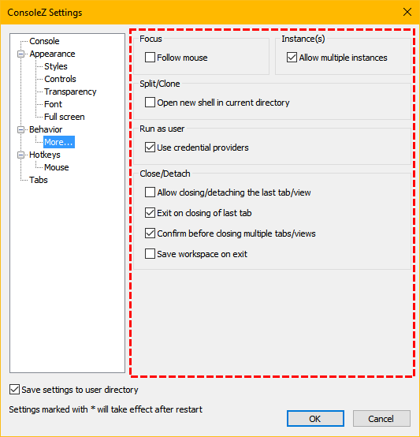

Follow mouse
If checked, the view, where mouse is hover, has the focus.
Allow multiple instances
If checked, every call to ConsoleZ will correspond to a new instance.
Otherwise only one instance of ConsoleZ will exist and the call to ConsoleZ will correspond to a new tab.
Open new shell in current directory
If checked, new shell created by following actions will use the same current directory as the active view:
Split the current view horizontally
Split the current view vertically
Clone the current view in a new tab
Use credential providers
If checked, credential providers are used (allowing integration of additional authentication mechanisms such as biometrics and smart cards).
Allow closing the last tab/view
If checked, the tab close button is available for the last tab.
ConsoleZ cannot prevent shell termination (if you type exit for example),
but can disable menu close actions or close button.
Exit on closing of last tab
If unchecked, the application doesn't exit on closing the last tab/view.
Confirm before closing multiple tabs/views
If checked, a confirmation message is displayed before closing multiple tabs/views.
Save workspace on exit
If checked, the current opened tabs and views are automatically saved in a workspace file on exit.
If checked, auto-saved workspace file will be automatically loaded when a new instance of ConsoleZ, without any tab specified in command line, starts.